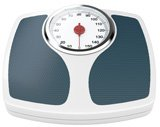
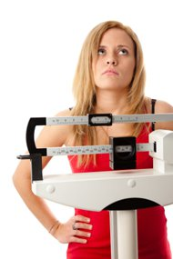
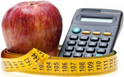
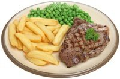
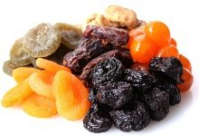

Weight Gain
About two thirds of people in the US are either overweight or obese (1).
However, there are also many people with the opposite problem of being too skinny (2).
This is a concern, because being underweight can be just as bad for your health as being obese.
Additionally, many people who are not clinically underweight still want to gain some muscle.
Whether you are clinically underweight or simply a “hard gainer” struggling to gain some muscle weight, the main principles are the same.
This article outlines a simple strategy to quickly gain weight, the healthy way.
What Does “Underweight” Really Mean?
Being underweight is defined as having a body mass index (BMI) below 18.5. This is estimated to be less than the body mass needed to sustain optimal health.
Conversely, over 25 is considered overweight and over 30 is considered obese.
Use this calculator to see where you fit on the BMI scale (opens in new tab).
However, keep in mind that there are many problems with the BMI scale, which only looks at weight and height. It does not take muscle mass into account.
Some people are naturally very skinny but still healthy. Being underweight according to this scale does not necessarily mean that you have a health problem.
Being underweight is about 2-3 times as common among girls and women. In the US, 1% of men and 2.4% of women 20 years and older are underweight (2).
Bottom Line: Being underweight is defined as having a body mass index (BMI) below 18.5. It is much more common in women and girls.
What Are The Health Consequences of Being Underweight?

Obesity is currently one of the world’s biggest health problems.
However, being underweight may be just as bad for your health as being obese.
According to one study, being underweight was associated with a 140% greater risk of early death in men, and 100% in women (3).
In this study, obesity was “only” associated with a 50% greater risk of early death, indicating that being underweight may be even worse for your health (3).
Another study found increased risk of early death in underweight men, but not women. This indicates that being underweight may be worse for men (4).
Being underweight can also impair immune function, raise your risk of infections, lead to osteoporosis and fractures, and cause fertility problems (5, 6, 7).
People who are underweight are also much more likely to get sarcopenia (age-related muscle wasting), and may be at greater risk of dementia (8, 9).
Bottom Line:Being underweight can be just as unhealthy as being obese, if not more. People who are underweight are at risk of osteoporosis, infections, fertility problems and early death.
Several Things Can Cause Someone to Become Underweight
There are several medical conditions that can cause unhealthy weight loss
Here are a few of them:
1.Eating disorders: This includes anorexia nervosa, a serious mental disorder.
2.Thyroid problems: Having an overactive thyroid (hyperthyroidism) can boost metabolism and cause unhealthy weight loss.
3.Celiac disease: The most severe form of gluten intolerance. Most people with celiac disease don’t know that they have it (10).
4.Diabetes: Having uncontrolled diabetes (mainly type 1) can lead to severe weight loss.
5.Cancer: Cancerous tumors often burn large amounts of calories and can cause someone to lose a lot of weight.
6.Infections: Certain infections can cause someone to become severely underweight. This includes parasites, tuberculosis and HIV/AIDS.
If you are underweight, then you may want to see a doctor in order to rule out a serious medical condition.
This is particularly important if you have recently started losing large amounts of weight without even trying.
Bottom Line: There are several medical conditions that can cause unhealthy weight loss. If you are underweight, then see a doctor to rule out a serious health problem.
How to Gain Weight The Healthy Way
If you want to gain weight, then it is very important that you do it right.
Binging on soda and donuts may help you gain weight, but it can destroy your health at the same time.
If you are underweight, then you want to gain a balanced amount of muscle mass and subcutaneous fat, not a bunch of unhealthy belly fat.
There are plenty of normal weight people who get type 2 diabetes, heart disease and other health problems often associated with obesity (11).

Therefore, it is absolutely essential that you still eat healthy foods and live an overall healthy lifestyle.
Now let’s look at several effective ways to gain weight fast, without ruining your health at the same time.
Bottom Line: It is very important to eat mostly healthy foods even if you are trying to gain weight.
Eat More Calories Than Your Body Burns

The most important thing you can do to gain weight is to eat more calories than your body needs.
A caloric surplus (calories in > calories out) is needed. Without it, you won’t gain. Period.
You can determine your calorie needs using this calorie calculator.
If you want to gain weight slowly and steadily, then aim for 300-500 calories more than you burn each day according to the calculator.
If you want to gain weight fast, then aim for something like 700-1000 calories above your maintenance level.
Keep in mind that calorie calculators only provide estimates. Your needs may vary by several hundred calories per day, give or take.
You don’t need to count calories for the rest of your life, but it helps to do it for the first few days/weeks to get a feel for how many calories you are eating.
I recommend using tools like Cron-o-meter or MyFitnessPal to track your intake.
Bottom Line: You need to eat more calories than your body burns in order to gain weight. Aim for 300-500 calories per day above your maintenance level, or 700-1000 calories if you want to gain weight fast.
Eat Lots of Protein
The single most important nutrient for gaining healthy weight is protein.
Muscle is made of protein, and without it most of those extra calories may end up as body fat.
Studies show that during periods of overfeeding, a high protein diet causes many of the extra calories to be turned into muscle (12).
However, keep in mind that protein is a double-edged sword. It is also highly filling, so that it can reduce your hunger and appetite significantly. This can make it harder to get in enough calories (13, 14).
If you’re trying to gain weight, aim for 0.7-1 grams of protein per pound of body weight (1.5 – 2.2 grams of protein per kilogram). You can even go above that if your calorie intake is very high.
High-protein foods include meats, fish, eggs, many dairy products, legumes, nuts and others. Protein supplements like whey protein can also be useful if you struggle to get enough protein in your diet.
Bottom Line: Protein forms the building blocks of your muscles. Eating sufficient protein is required to gain muscle weight instead of just fat.
Eat Lots of Carbs and Fat, and Eat at Least 3 Times Per Day

Many people try restricting either carbs or fat when they are trying to lose weight.
This is a bad idea if your goal is to gain weight, because it will make it harder to get in enough calories.
Eat plenty of high-carb and high-fat foods if weight gain is a priority for you. It is best to eat plenty of protein, fat and carbs at each meal.
It is also a bad idea to do intermittent fasting. This is useful for weight loss and health improvement, but can make it much harder to eat enough calories to gain weight.
Make sure to eat at least 3 meals per day, and try to add in energy-dense snacks whenever possible.
Bottom Line: In order to gain weight, eat at least 3 meals per day and make sure to eat plenty of fat, carbs and protein.
Eat a Lot of Energy-Dense Foods and use Sauces, Spices and Condiments

Again, it is very important to eat mostly whole, single ingredient foods.
The problem is that these foods tend to be more filling than processed junk foods, making it harder to get in enough calories.
Using plenty of spices, sauces and condiments can help with this. The tastier your food is, the easier it is to eat a lot of it.
Also, try to emphasize energy-dense foods as much as possible. These are foods that contain many calories relative to their weight.
Here are some energy-dense foods that are perfect for gaining weight:
1.Nuts: Almonds, walnuts, macadamia nuts, peanuts, etc.
2.Dried fruit: Raisins, dates, prunes and others.
3.High-fat dairy: Whole milk, full-fat yogurt, cheese, cream.
4.Fats and Oils: Extra virgin olive oil and avocado oil.
5.Grains: Whole grains like oats and brown rice.
6.Meat: Chicken, beef, pork, lamb, etc. Choose fattier cuts.
7.Tubers: Potatoes, sweet potatoes and yams.
Dark chocolate, avocados, peanut butter, coconut milk, granola, trail mixes.
Many of these foods are very filling, and sometimes you may need to force yourself to keep eating even if you feel full.
It may be a good idea not to eat a ton of vegetables if gaining weight is a priority for you. It simply leaves less room for energy-dense foods.
Eating whole fruit is fine, but try to emphasize fruit that doesn’t require too much chewing, such as bananas.
Bottom Line: You can add sauces, spices and condiments to your foods to make it easier to eat more of them. Base your diet on energy-dense foods as much as possible.
Lift Heavy Weights and Improve Your Strength
In order to make sure that the excess calories go to your muscles instead of just your fat cells, then it is absolutely crucial to lift weights.
Go to a gym and lift, 2-4 times per week. Lift heavy, and try to increase the weights and volume over time.
If you are completely out of shape or you are new to training, then consider hiring a qualified personal trainer to help you get started.
You may also want to consult with a doctor if you have skeletal problems or any sort of medical issue.
It is probably best to take it easy on the cardio for now. Focus mostly on the weights.
Doing some cardio is fine to improve fitness and well-being, but don’t do so much that you end up burning all the additional calories you are eating.
Bottom Line: It is very important to lift heavy weights and improve your strength. This will help you gain muscle mass instead of just fat.
10 More Tips to Gain Weight
Combining a high calorie intake with heavy strength training are the two most important factors.
That being said, there are several more things you can do to gain weight even faster.
Here are 10 more tips to gain weight:
1.Don’t drink water before meals. This can fill your stomach and make it harder to get in enough calories.
2.Eat more often. Squeeze in an additional meal or snack whenever you can, such as before bed.
3.Drink milk. Drinking whole milk to quench thirst is a simple way to get in more high-quality protein and calories.
4.Try weight gainer shakes. If you are really struggling then you can try weight gainer shakes. These are very high in protein, carbs and calories.
5.Use bigger plates. Definitely use large plates if you are trying to get in more calories, as smaller plates cause people to automatically eat less.
6.Add cream to your coffee. This is a simple way to add in more calories.
7.Take creatine. The muscle building supplement creatine monohydrate can help you gain a few pounds in muscle weight.
8.Get quality sleep. Sleeping properly is very important for muscle growth.
9.Eat your protein first and vegetables last. If you have a mix of foods on your plate, eat the calorie-dense and protein-rich foods first. Eat the vegetables last.
10.Don’t smoke. Smokers tend to weigh less than non-smokers, and quitting smoking often leads to weight gain.
Bottom Line: There are several other things you can do to gain weight even faster. These include drinking milk, using weight gainer shakes, adding cream to your coffee and eating more often.
Gaining Weight Can be Difficult, and Consistency is The Key to Long-Term Success
It can actually be very difficult for some people to gain weight.
That’s because your body has a certain setpoint of weight where it feels comfortable.
Whether you try to go under your set point (lose weight) or over it (gain weight), your body resists changes by regulating your hunger levels and metabolic rate.
When you eat more calories and gain weight, you can expect your body to respond by reducing your appetite and boosting your metabolism.
This is largely mediated by the brain, as well as weight regulating hormones like leptin.
So you should expect a certain level of difficulty. In some cases, you may literally need to force yourself to eat despite feeling stuffed.
At the end of the day, changing your weight is a marathon, not a sprint. It can take a long time, and you need to be consistent if you want to succeed in the long run.